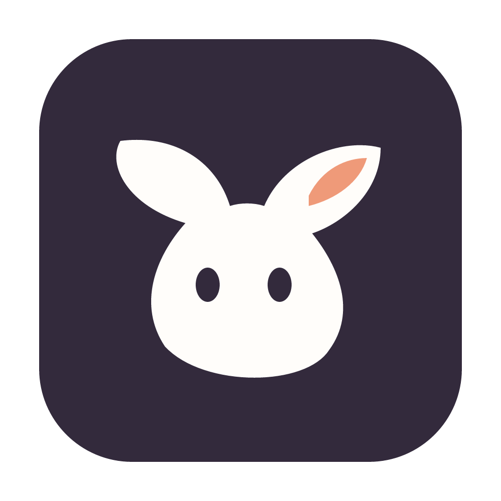

A mascot with
a point of view.
VORO keeps its abstract name and finds a little soul. Two leafy ears, a curious face, and a soft, lopsided silhouette make our sprout mascot feel like a character from a world still being made. The lowercase wordmark keeps it friendly.
Primary lockup / Light surfaces
Reversed lockup / Plum surfaces
Compact lockup / Application navigation

Native application icon / macOS
Give the logo clear space equal to the width of one mascot eye. Minimum widths: horizontal 260px, compact 180px, mark 24px. The application icon is separately rendered for small system sizes. Keep proportions, colors, and letterforms intact.
A little color.
A lot of possibility.
Plum
#755087 · Action / focus
Ink
#332A3C · Text / navigation
Canvas
#F5F1EE · Workspace
Paper
#FFFDFA · Reading / controls
Stage
#E9E7E6 · Object previews
Apricot
#EF9A79 · Brand accent
Butter
#F2D58D · Mascot
Lilac
#DCD0E9 · Artwork / accents
Use ink or muted #6b626c for readable text on light surfaces. White is readable on plum. Orange accents are decorative; for change-required text, use #85452d on #FBEAE1. Approval uses #346348 on #E9F2E8. Errors use #A03949 on #FBE9EC. Never rely on color alone.
Bricolage Grotesque
One more prop.
A whole new world.
Bold 700–800 / Display, short headings, wordmark
60px welcome · 30px workspace ·
23px inspector
DM Sans
Round the front edge of the seat. Keep the profile light, and check how the material catches the studio light.
Variable 400–700 / Controls, paths, notes, metadata
13px controls · 12–14px
reading · 11px secondary metadata
Fonts are bundled locally. The interface works without network access. Keep expressive typography in short headings; let task content stay clear and quiet.
Serious about play.
Actionable language. Labeled review states. A visible focus ring for every control.
Furniture / Seating
The rounded outline belongs to selection. A soft contact sheet gives the objects room; borders organize controls and notes.
Say what helps.
Direct, observant, constructive. A reviewer is a collaborator, and the interface should sound like one.
- “Saved beside asset” — state where the work lives.
- “Needs changes” — leave room for the next pass.
- “Open a project folder” — name the exact action.
- Explain errors and give the next useful step.
Keep the rhythm.
- Use a 4px spacing base: 4, 8, 12, 16, 24, 32.
- Use 10px corners on controls; 18px for overlay panels.
- Keep the deep plum rail calm while the artwork takes the lead.
- Use brief, 160ms feedback; respect reduced motion.
- No decorative shadows, gradients, stretched marks, or orange body text on white.
Ready to carry the identity.

{kind=link}
{kind=link}